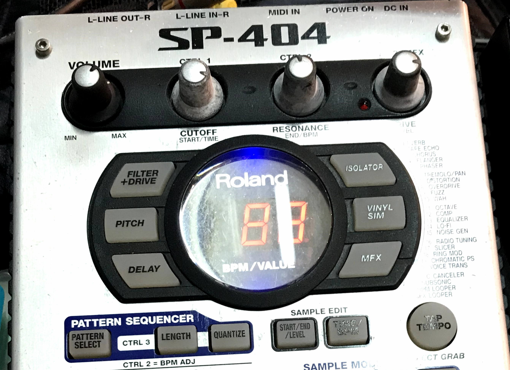
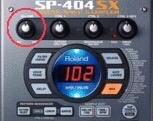

SP-404 機型示意圖
 我們修哪些問題？
- 主音量旋鈕／摩擦雜音、接觸不良
- 內部電位器或相關零件故障
- 找不到零件？我們代購原規格全新零件（無拆機件、無清潔件）
維修流程（簡短版）
- 聯絡→提供機型與故障描述、可附照片或短片。
- 評估報價（包含零件費、工時、預估運費）。
- 寄修或預約現場檢修：到貨後 1–3 工作天初步檢測。
- 更換零件、測試（含聲音測試、輸出測量）。
- 付款與寄回（提供維修紀錄與保固說明）。
維修保固
完成維修後提供 30 天故障保固（非人為二次損壞）。
台灣 Roland / SP‑404 取樣機 — 僅限音量電位器與相關零件維修，修好後旋轉順暢無雜音。也可協助代購其他原規格海外全新零件（無拆機件、無清潔件）。
完成維修後提供 30 天故障保固（非人為二次損壞）。
通常主音量雜音來源：電位器磨耗、灰塵導電、焊點鬆脫或輸出放大器不穩。更換電位器與重新焊接常能解決 80% 以上問題。
例如以下常見搜尋詞，可增加使用者找到此頁的機率：